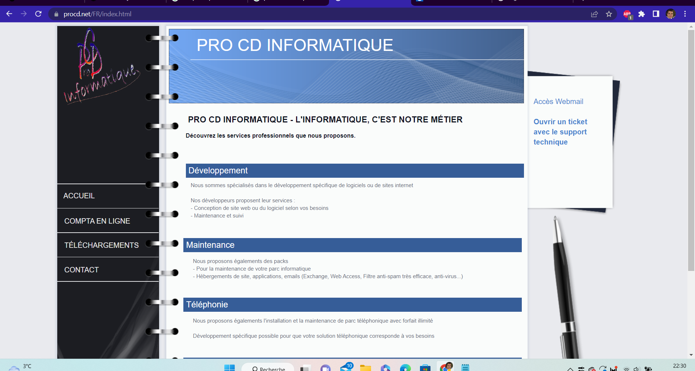

J'ai effectué mon alternance durant ma formation au BTS SIO au sein de l'entreprise Pro CD Informatique.
Cette entreprise fondée en 1992 par Daniel Cohen a pour secteur est la maintenance de parc informatique.
En plus de cette activité Pro CD Informatique propose aussi la conception de sites internet et logiciels, le langage pricipalement utilisé est le WLangage
Pro CD Informatique propose la mise en place d'un réseau aux entreprises, l'entreprise peut être intervenir à n'importe quelle étape. Organiser le câblage dans une entreprise ou simplement mettre en place un serveur interne.
J'ai d'ailleurs eu l'occasion de participer au câblage d'un centre médicale.
L'entreprise est définie juridiquement comme une SARL, elle comporte 3-5 salariés (TPE).
Elle est localisée au 204 Bd Félix Faure, 93300 Aubervilliers. Pro CD Informatique est une entreprise familiale, le fils du fondateur, Abraham Cohen, est aujourd'hui dirigeant. Il a d'ailleurs été mon tuteur au cours de cette alternance.
L'entreprise est assez rigoureuse dans tous les aspects de la cyber-sécurité, pour donner un exemple, toutes les connexions à internet se font via un VPN (Virtual Private Network) qui crypte toutes les communications.
Après un entretien, où j'ai mis en avant mes connaissances informatiques acquises lors de mon baccalauréat, j'ai été embauché.
Au sein de l'entreprise, ma fonction principale était de développer des sites internet et des applications métiers. J'ai partipé à deux grands projets :
Développement d'un logiciel de gestion pour une association (en Windev)
Développement d'un logiciel de prise de commande d'un restaurant (en Windev), j'ai aussi participé au développement de cette application en version mobile.
En dehors de ces projets j'ai été chargé d'ajouter des fonctionnalités à des logiciels déjà existants.
J'ai aussi été chargé de faire ou de modifier des sites vitrines en HTML & CSS & PHP, en Windev.
Par exemple :
Le site de l'entreprise: Pro CD Informatique (Windev)
Voici la fenêtre d'accueil du logiciel de gestion de l'association:
Voici visualistaion d'une requête sur windev appelée rétro-analyse, cette requête permet de récupérer les données des dons d'un donateur précis à partir d'une date
Voici la requête sous sa forme SQL:
Voici la fenêtre d'accueil du logiciel de prise de commande du restaurant:
Voici la fenêtre de la gestion générale
Voici la fenêtre d'accueil du site de l'entreprise développé en WINDEV
Une page de déclaration de ticket est accessible pour utilisateurs clients
Voici le formulaire de création d'un ticket: